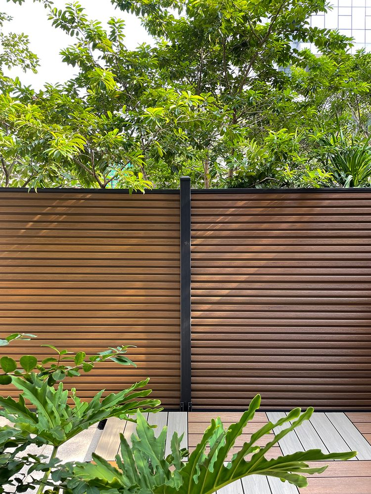

Signature feature
Co-extruded, capped for life
A co-extruded ASA/PE skin wraps all four faces of every board. ASA — the weatherable polymer used on exterior automotive trim — holds colour and resists chalking far longer than the budget PVC caps on cheaper composite.